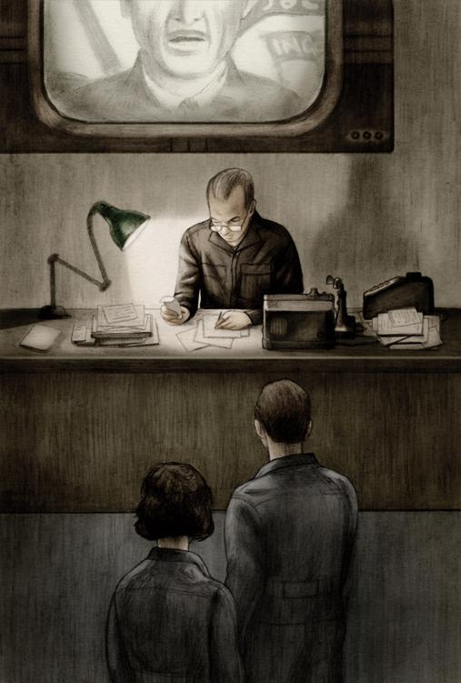

八
事情终于发生了。
温斯顿和朱丽亚现在站着的房子，是长方形的，灯光柔和。电幕声音很低。蓝黑的地毯，厚厚的，让人有踩踏天鹅绒的感觉。房间的尽头奥布赖恩正伏案工作。台灯的罩子是绿的，桌上堆着一大堆文件。用人带他们两人进来时，他连头也懒得抬起来。

温斯顿的心脏跳个不停，他真不知道自己是否还会说出话来。他现在能想到的，只是这句话：终于干上了！跑到这里来见奥布赖恩实在鲁莽，而带着朱丽亚一道来更愚不可及，虽然他们是分头来的，到这屋子的门前才一道走进来。像这样的地方，即便踏上一步也需要非常大的勇气。能够走进一个内党党员的住宅，实在是千载难逢的机会，平日连他们所住的区域也不轻易闯入。这一排排高楼大厦特有的气氛和气派、佳肴美食的香味、上好烟草的芬芳、快速宁静的电梯、来回穿梭着白制服的用人——看到的、听到的、闻到的都摄人心魂。虽然他造访的理由极为充分，走起路来还是提心吊胆的，生怕神出鬼没的黑衣警卫随时出现检查证件，然后撵他们出去。奥布赖恩的用人却一点也没有为难他们。这人个子矮小，黑发，着白制服，面部毫无表情，可能是个华人。他带他们走过的一条走廊，也是铺了厚厚的地毯，两边墙壁粉刷得一片乳白。这又是一种先声夺人的威势，温斯顿从来没见过一条走廊不是肮脏的。
奥布赖恩正全神贯注地看着手上的一份文件。因为他低着头，温斯顿看清楚了他额前到鼻子的线条。他宽厚的脸，显得既威严又智慧。约摸有二十秒钟的光景，他纹丝不动地坐着。突然他把录音书写器拉到面前，用真理部的行话念道：
“第一、五、七项照准建议第六项双倍加荒谬迹近思罪取消。未得正确机器费用估计前停止工程计划完了。”
念完后他才慢慢地站起来，踏着无声无息的地毯朝着他们站的方向走去。念完那段新语公文后，他的大官气派虽然稍敛，但表情却比平日所见严肃多了，好像工作受到打扰而不太高兴的样子。这时温斯顿既尴尬又恐惧。他会不会做了一件最愚蠢的事？他又怎知道奥布赖恩跟他是同路人？除了那短短一瞬的目光和一两句模棱两可的话，他还有什么证据？其余一切，都是想象出来的吧？到了这步田地，他原来到这里拿辞典的借口已用不上了。拿书何必两个人来？奥布赖恩这时走到电幕前，好像想起了什么似的，突然转身，按了按墙上的开关。啪的一声，电幕停了。
朱丽亚禁不住发出低声的惊叫。温斯顿虽然也吓得呆了，但这实在是意外，他也忍不住了，说：“你的电幕可以完全关掉？”
“对的，我们有这种特权。”奥布赖恩回答说。
他已站到温斯顿和朱丽亚两人面前。高大的个子，居高临下地盯着他们，脸上的表情还是跟先前一样不可捉摸。他板着脸孔等着温斯顿先说话。但说些什么呢？奥布赖恩显然还是不高兴。他是个大忙人，而他们两人出现打断了他的工作。谁也没有做声。电幕关闭了以后，房间静寂无声，一分一秒仿若千年。温斯顿好不容易才能集中精神正眼看着奥布赖恩。过了一会儿，奥布赖恩的面色终于缓和了一点，用他习惯的姿势推了推眼镜。
“你先说还是我先说？”他问。
“我说吧。”温斯顿马上答道，“电幕真的关了？”
“关了。在这房子内说的话，只有我们三个人听到。”
“我们来这里，因为——”
他顿了顿，因为他自己也搞不清楚他来这里的目的。另一方面，他实在也不知道奥布赖恩能够帮他什么忙，因此也不能告诉他为什么找他。但既然自告奋勇要先说话，不得不勉为其难，虽然自己也知道对方听来一定觉得这种借口虚浮得很。
“我们来这里，因为我们相信你与一个地下反党组织有关。我们愿意参加。我们是党的敌人，反对英社的宗旨。我们是思想犯、通奸犯。我把这些事告诉你，无非也是要把我们的性命放在你手上。如果你要检举我们，我们只好认命。”
说到这里，温斯顿好像听到房门开了，转头一望。果然，那个黄脸孔的东方人连敲也不敲就打开门走进来。他捧着一个盘子，上面盛着玻璃瓶和几个杯子。
“马丁是我们的人。”奥布赖恩面无表情地说，“马丁，把盘子拿到这边来，放在台上吧。椅子够不够？好，那么我们大家坐下来谈吧。马丁，你自己也拉一把椅子来，我们谈的是公事，在十分钟内你不必做用人了。”
马丁依言坐了下来。他虽然没有显出局促的样子，但你还可以看出来他是个用人，一个享受着特权的用人。温斯顿从眼角觑他一眼。不消说，这人一生都在扮演一个角色，因此连一分钟也不敢放弃这角色应有的表现与性格。奥布赖恩拿起瓶子，把杯子盛满了深红的液体。温斯顿隐约记得许久以前好像在墙上或广告板上看过类似的东西：一个由小灯泡组成的大瓶子一上一下地移动把液体倒在杯中。现在面前的液体，由上面看下去是黑色，可是在瓶子内则闪亮如红宝石，味道酸酸甜甜。温斯顿看到朱丽亚拿起杯子好奇地嗅着。
“这东西是葡萄酒，”奥布赖恩淡淡地笑着说，“你在书上一定见过了。这东西供给外党享用的恐怕不多。”接着他的面色又严肃起来，举杯说，“我想我们应该先为我们的领袖伊曼纽尔·戈斯坦的健康喝一杯！”
温斯顿有点兴奋地举起杯子。用葡萄或其他果子酿制的酒，他在书本上见过，梦到过，就是没有尝过。像玻璃镇纸和查林顿先生所记得的歌谣片段一样，这东西是属于已经过去了的浪漫时代。在他的心底，他称那个时代为黄金时代。也不知什么原因，他一直以为葡萄酒是甜甜的，如黑莓酱，并且一到肚子就见酒力。事实并不如此，他喝了一口后就大感失望。可能是他喝了胜利杜松子酒多年，已尝不出这酒的真正味道来。他把空杯子放下。
“那戈斯坦真有其人了？”他问道。
“对的，真有其人，而且活着，人在哪里我就不知道了。”
“那么那个叛乱组织也是真的了？不是思想警察杜撰出来的？”
“不是，真有这个组织，我们叫兄弟会。可是除了兄弟会真的存在和你是其中一分子外，其他的事情你永远不会知道。我等会儿再跟你解释。”他看看腕表，又说，“我虽然是个内党党员，也不敢把电幕关上半小时以上。你们实在不应一道来的。离开时你们一人先走。这样吧，同志——”他朝朱丽亚点了点头，继续说，“你先走。我们能够谈的时间只有二十分钟，让我先问你们一些问题吧。大概地说，你们准备做些什么事？”
“任何我们能力所及的。”温斯顿答道。
奥布赖恩移动了一下身体，面对温斯顿。他好像觉得不必理会朱丽亚了，因为他假定温斯顿可做她的代言人。他半闭着眼睛，用低沉而不带情感的声音发问，大概在他看来，这正如教堂给人施洗礼时所做的例行公事，不待对方发言也知道答案是什么了。
“你是否愿意随时牺牲性命？”
“是。”
“愿意执行谋杀命令？”
“是。”
“执行可能伤及千百无辜性命的破坏工作？”
“是。”
“出卖你自己的国家？”
“是。”
“干瞒混欺骗、敲诈勒索的事以败坏孩子的心灵，分发毒品，迫良为娼，散布性病——一句话，你愿不愿意不择手段去破坏党的权力？”
“愿意。”
“举个实例。如果对我们的组织有利，你愿不愿意在一个孩子的脸上倒硫酸？”
“愿意。”
“你愿不愿意失去你目前的身份，一辈子做侍者或码头工人？”
“愿意。”
“如果我们命令你自杀呢？”
“愿意。”
“你们两人愿意分开，一辈子永不见面？”
“不！”朱丽亚插嘴说。
温斯顿等了好一会儿才答话。在那一刹那间，他好像失去了说话的能力。他的舌头翻滚，迸出了一个音节，然后是第二个音节……在说出之前的一秒钟，他还不知是要答“是”或“不”。
他最后还是说了“不”。
“你说了实话，那很好，”奥布赖恩说，“我们什么都要知道得清清楚楚。”
他转过身去对着朱丽亚，然后用较有感情的腔调补充说：
“你知道吗，即使他将来能活下来，也会变成另外一个人。我们说不定要给他一个新的身份。他的行动、手足的形状、发色，甚至连声音也都改变了。你自己也一样。我们的整形专家可把任何人脱胎换骨。为了需要，我们有时得把一只手或一条腿割去。”
温斯顿听到这里，忍不住又偷偷打量了马丁一眼。他看不到什么疤痕。朱丽亚脸色变得苍白，雀斑也更明显了，但她勇敢地正面瞧着奥布赖恩，喃喃地好像说了同意的话。
“好，那就解决了。”奥布赖恩说。
台上摆着一个银盒子，里面是香烟。他心不在焉地把盒子推到他们面前，自己也取了一根，然后站起来来回踱步，好像这样比坐着容易思考。这纸烟烟草很好，结结实实的，纸质柔滑。奥布赖恩又看看腕表。
“马丁，你该回到厨房去了。十五分钟内我就得把电幕打开。你离开前把这两位同志的面孔牢记下来，因为你将来还要跟他们见面，我自己就说不定了。”
就像他们在前门时一样，马丁的黑眼睛在他们脸上打量了一遍，态度一点也不见得友善。他虽然在审视二人面部的特征，却对他们一点兴趣也没有，即使有也看不出来。也许一个整了容的面孔是难有表情的，温斯顿想。马丁一句话也没有说，也没有举手或点头为礼，就离开了，一声不响地把门关上。奥布赖恩来回地踱着步，一手插在黑制服的口袋里，一手捻着纸烟。
“你们要知道，”他开腔了，“你们是秘密作战，永远如此。你们收到命令，就要不问究竟地去执行。过些时候我会给你们看一本书，你们就会知道我们现在所处的社会是哪一种社会。这书也会告诉你们我们怎样毁灭它的方法。书看完了后，你们就是兄弟会的正式会员。但除了我们斗争的基本目的，你们永远不会知道其他细节，也不会知道摆在眼前的任务性质。我可以告诉你们兄弟会确有其事，却不能告诉你们会员是一百个或一千万。就你们的圈子来讲，你们甚至不知道兄弟会的人数够不够十个。跟你们接触的有三四个人，但下次再跟你们接触的，不会是同样的同志。马丁是你们接触到的第一个，因此不用更换。给你们的命令，都是由我发的。如果有需要跟你们联系，马丁就是线人。你们被捕后，就招供，但除了你们所做的事外，也没有什么可招的。你们能出卖的，极其量也不过是三四个无关紧要的人。大概连我你们也出卖不了，因为到时我不是死了，就是另外一个人、另外一个面孔。”
奥布赖恩还是不断地在柔软的地毯上踱着方步。他块头虽然硕大，动作却异常优雅，无论插手入口袋也好，伸手弹烟灰也好，都显出一种近乎飘逸的姿态。他予人的感觉，不但果断刚强，而且充满自信。还有一点：他言谈间还不时带着淡淡的讥讽意味。难得的是他态度虽然认真，却没有那种盲从附和的人惯有的偏执。他提到谋杀、自戕、性病、断肢和整容时，你总觉得口吻近乎揶揄，好像在说：“这是无可避免的事，只得勉为其难。但环境改变了以后，人的尊严得到肯定了以后，我们就可洗手不干了。”温斯顿对奥布赖恩由衷地佩服，几乎可说是崇拜了。一下子他竟把戈斯坦忘了。你只要看看奥布赖恩坚强有力的肩膀、既粗糙又睿智豪迈的面孔，你不会相信他这个人会被击败的。他绝对是个事事洞悉先机、熟娴韬略的人。连朱丽亚也被他吸引住了，一直全神贯注地倾听着，连手上的纸烟也忘了抽。奥布赖恩又开始说话了：
“你们既然听过有关兄弟会存在的谣言，自然会对这个组织产生许多幻想。譬如说，在你们的想象中这是个庞大的叛乱组织，会员常在地窖聚会，在墙上传口信，或靠密语和手势互相招呼。事实上这都是传言。兄弟会会员无法认出对方是否同志。而除了几个线人外，任何会员都不知其他同党的身份。就算戈斯坦本人落在思想警察手上，也不能供出全部会员的名单，也不知哪里才可以找到全部会员的名单。很简单，根本没有这份名单。兄弟会不能一网打尽，正因为它不是一个普通的组织。除了一个不可毁灭的理想外，再没有其他东西把所有会员结合在一起。而这理想也是支持你们精神唯一的力量，因为你们没有同志爱，也没有什么鼓励和慰藉。你们出了事后，没有人会帮助你们，因为我们从来不援救会员。如果有绝对的需要不让一个被捕的同志讲话，我们也许会偷送一块刀片到狱中。你们要习惯过无希望和无结果的生活，因为工作一个时期后你们会难免失手，招供后就牺牲了。这就是你们能看到的唯一结果。我们一生中，没有可能看见什么转变。我们实际上是已经死了的人。真正的生命寄托于未来，但我们只能以尚未腐朽的几块骨头去参与了。问题是未来究竟有多远，谁都不知道。可能是几百年，可能是一千年。在目前，我们除了把清醒的范围渐渐扩大，也没有其他能做的事了。我们不能集体去做，只能以单独传播的方式，把我们的知识与经验向外推出，一代传一代地推出。在思想警察的阴影下，还有什么办法？”
他说完后又看了看腕表。
“也到了你该离开的时间了，同志，”他对朱丽亚说，“等一下，瓶子内的酒还未喝完。”
他把三个杯子倒满，然后举起自己的杯子。
“这次为什么而干杯呢？”他问道，口气还是半带嘲讽，“为愚弄思想警察成功而干杯？或为老大哥早归道山？为人类？为未来？”
“为过去。”温斯顿说。
“对，过去更重要。”奥布赖恩严肃地附和说。他们干杯后不久朱丽亚就站起来准备告辞。奥布赖恩从壁橱取下一个小盒子，拿了一粒扁平的白药片给她，要她放在舌上。他说不能让外面的人闻到她口中的酒味，那些开电梯的人看人很细心。门一关上，奥布赖恩就似乎忘记有她这个人了。他踱了两步，停下来。
“现在我们得解决一些细节问题，”他说，“我想你一定有什么可以躲过电幕的藏身之地吧？”
温斯顿就告诉他已租下查林顿先生的房子。
“那就暂时应付应付吧。过些日子我们再替你安排别的，要紧的是常常换地方。目前我要张罗的，就是怎样把那本书送到你手上。”温斯顿注意到，甚至奥布赖恩提到那本书时，也是加重语气的。“你明白吗，我是说戈斯坦那本书。我想办法尽快交给你，但说不定要等好几天。流传的也没有好几本了，想你也猜得到。我们印一本，思想警察就追查出一本。但这没关系，这本书是消灭不了的，如果最后一本也难逃劫数的话，凭我们的记忆，也差不多可以一字不漏地再印一本。你带公文包上班吗？”
“通常都带。”
“什么样子的？”
“黑色，破烂不堪，有两条带子。”
“黑色，破烂不堪，有两条带子——好。过几天——我不能给你确定日期——你上班时收到的文件中有一份会出现一个错字，你要求再送一份。第二天你上班时就不用带公文包。那天在街上，某个时候会有一个男人上前按按你的手臂说：‘我想这公文包是你的。’他给你的公文包中就有戈斯坦的书。十四天后你就得归还。”
两人都沉默起来。
过一会儿，奥布赖恩打破沉寂说：“还有两分钟你就得走了。我们再见——如果真能再见的话。”
温斯顿抬头望他，然后迟疑地问：“在没有黑暗的地方再见？”
奥布赖恩点头，没有显出惊异的样子。“对，在没有黑暗的地方再见。”他说，好像懂得温斯顿的暗示，“但现在，在你离开前，有没有想说的话？有没有什么口信要我转交？或者有什么问题？”
温斯顿想了想，似乎没有什么要问的问题了，更不想唱任何高调。现在他想到的，倒是些跟奥布赖恩或兄弟会毫无关系的事。他脑中浮起的，是一幅合组的图画：她母亲最后住过的阴黑房子、查林顿先生店子楼上的密室、玻璃镇纸、钢板雕刻画和红木画框。他随口问道：“你有没有听过这么一首歌谣？开始一句是这样的：‘橘子与柠檬，吟着圣克莱门特的钟。’”
奥布赖恩点了点头，接着用近乎虔诚的声音把整段歌谣念出来：
橘子与柠檬，吟着圣克莱门特的钟；
你欠我三法新，响着圣马丁的铃；
几时还我？哼着老贝利的铃；
等我阔了，答着肖迪奇的钟。
“你还记得最后一行！”温斯顿惊奇地说。
“对的，我还记得最后一行。可惜的是，你得离开了。等一下，我得先给你药片。”
温斯顿站起来后，奥布赖恩伸出了手。他重重握着，温斯顿的掌心几乎给他压碎了。到门口时温斯顿回头一笑，但奥布赖恩似乎正准备把他这个人忘得一干二净似的。他的手指按着电幕的开关，等温斯顿离开。奥布赖恩的后面，是书桌、绿色的灯罩、录音书写器和堆在铁篮子内一沓沓的文件。事情结束了，温斯顿想道，半分钟内，奥布赖恩就会恢复刚才被打断的重要工作，继续为党服务。